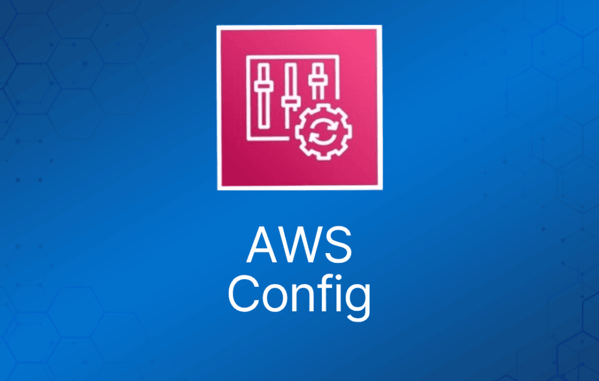

AWS Config 是一项完全托管的服务，为你提供 AWS 资源清单、配置历史以及配置变更通知，帮助你实现安全与治理。
借助 AWS Config，你可以发现现有的 AWS 资源、导出包含全部配置细节的完整资源清单，并查看某个资源在任意时间点的配置状态。
这些能力可用于合规审计、安全分析、资源变更跟踪和故障排查。
让你能够评估、审计和检查 AWS 资源的配置。
作为 ITIL 体系的一部分，它对配置管理非常有用。
可以为各种配置项和文件建立基线（baseline），然后跟踪相对该基线的变化。
AWS Config 与 CloudTrail 的对比
AWS CloudTrail 记录你账户上的用户 API 活动，并允许你查询这些活动的信息。
AWS Config 则以配置项（Configuration Item，CI）的形式记录 AWS 资源在某个时间点的配置详情。
你可以用 AWS Config 的 CI 回答“我的 AWS 资源在某个时间点长什么样？”
你可以用 AWS CloudTrail 回答“谁发起了修改这个资源的 API 调用？”
AWS Config Rules
Config Rule 表示资源应满足的期望配置，并会根据 AWS Config 记录的相关资源变更进行评估。
AWS Config Rules 可以检查资源是否满足某些期望条件，如果发现违规，该资源会被标记为“不合规（noncompliant）”。
Config Rules 示例：
- Amazon RDS 是否启用了备份？
- AWS 账户是否启用了 CloudTrail？
- Amazon EBS 卷是否已加密。
配置项（Configuration Items）
配置项（Configuration Item，CI）是资源在某个给定时间点的配置。一个 CI 由 5 个部分组成：
- 不同资源类型通用的基本信息（例如 Amazon Resource Name、标签）。
- 特定于该资源的配置数据（例如 Amazon EC2 实例类型）。
- 与其他资源的关系映射（例如 EC2::Volume vol-3434df43 “已挂载到实例” EC2 Instance i-3432ee3a）。
- 与该状态相关的 AWS CloudTrail 事件 ID。
- 帮助你识别 CI 信息的元数据，例如该 CI 的版本以及捕获时间。
计费
AWS Config 根据你账户中受支持资源所记录的配置项（CI）数量收费。
每当 AWS Config 检测到其正在记录的资源类型发生变更时，就会创建一个新的配置项。